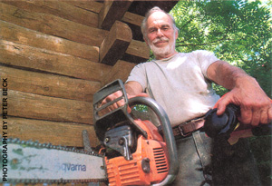
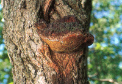
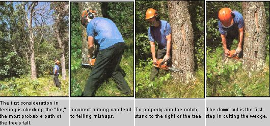
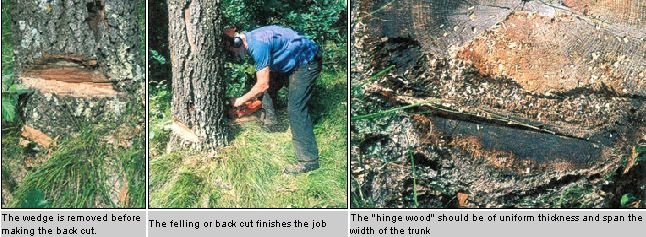
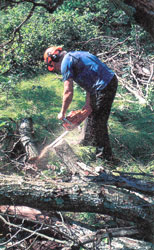
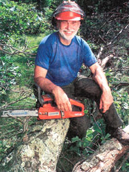

Logging is, in the words of a Michigan court, "an inherently dangerous occupation." And while this ruling has some legal implications, it also serves as an important warning to those people who would attempt to fell trees with a chain saw. I make my living from trees and have done so for the past 25 years. I plant them, I cut them down and I saw them up-and of all of these, the felling of a tree is the most hazardous.
Even so, cutting down a tree is a relatively straight forward procedure. Dangerous yes, but not all that complicated, provided you observe the proper techniques and precautions. What follows are safe and easy guidelines for harvesting your winter wood.
When harvesting fuel wood, I'll choose standing dead trees over live trees every time, as they contain good sound, dry firewood. Even better is if I find a healthy tree that is already on the ground.
Good firewood trees are generally hardwoods with large crowns, but a lot of these trees are notorious for rot and hollow spots that are almost impossible to detect until it is too late. You can sometimes tell if a tree is rotten by checking for shelf fungus, growths loggers refer to as "conks." The problem with cutting a rotten or conked tree is that it may very well break in half, sending the top dropping back on you. So even if there are no outward signs of rot, be alert. If you've already started felling the tree, watch for any change in the color or texture of the sawdust or any easier-than-expected sawing. With this kind of work, you can never keep too careful an eye out for anything that can go wrong.
Once you have selected a good tree, look to he sure it isn't holding up any dead trees or dead limbs that might vibrate loose before you finish your cut. Finally, check for vines, especially if you're in the South. Vines have been known to pull down other trees or hold the tree you're trying to fell or even swing the trunk to one side when it's cut.
The next precautionary step is determining the tree's "lie," or how it's most naturally inclined to fall. Walk all the way around the tree looking at the lean, the limb structure and anything else that might affect the lie. Keep in mind that trees seen from the ground are seen foreshortened; they are always taller than they appear.
Any tree that you decide to fell must have a clear space to fall into, and it must lean either into that space or at least not too strongly away from it. One of the most dangerous things you can do is hang one tree up in another. If this happens, never leave the tree hanging. There are methods for dealing with hung trees, though admittedly they are not easy and don't work in every case.
Amazingly, most people use the same method to cut trees today that the lumberjacks of the last century used, despite the fact that the crosscut saw-the "misery whip" of our ancestors-was long ago replaced by the modem chain saw.
The old-timers started by cutting a notch in the base of the tree on the side they wanted the tree to fall toward. They did this by first making a horizontal cut about a third of the way into the trunk with their saws. Then they completed the notch by chopping out the area above the saw cut until there was a 45° opening above the first cut. The felling was completed by sawing into the back of the trunk until the tree toppled.
It's important to understand, however, that the old-timers worked as they did because their equipment forced them to. To cut into a standing tree with a two-man saw, the workers had to stand facing the trunk as they pulled the saw. If they were to "aim" their notches at all, they had to do so looking over their shoulders. And that's the way a lot of folks still do it now. They stand facing the trunk and, by looking back over their shoulders, try to estimate where the notch should be. This is called "aiming with your ass" and it is one of the major causes of felling problems today.
Open Face Felling
Today's experienced loggers use a safer, more efficient cutting method called "open face felling," which borrows from but improves upon the traditional method of the 1890s. Thanks to the modern chain saw, practicing open face felling the right way is actually easier than doing it the wrong way. For most people, it's simply a matter of being shown how it's done.
With a two-cycle engine and no crankcase oil to spill about, as well as an all-position carburetor, a chain saw operates equally well in all positions, including completely upside down. It is lightweight, simply moved about and it can cut wood (or flesh) quickly and easily. Plus, if used the right way, a chain saw can help you guide your tree in the direction you want it to go with the least amount of danger.
On most every chain saw, there is a line of some sort on the back portion of the cover that runs perpendicular to the bar. Some professional saws have this line either painted on or molded into the cover, while on others, the back of the cover itself acts as a line. Check it out on your saw. If you can't find anything, take a piece of tape and mark a line on your cover perpendicular to your bar. This is to be your aiming line.
Now instead of acting as if you are using a two-man saw, come around to the opposite side of the trunk, face the direction you wish the tree to fall, take a position on the right side of the tree and rest your left shoulder against the trunk. Hold your saw directly in front of you, tipped slightly forward with the bar against the trunk. You should now be able to sight along your aiming line. if you cut directly down into the trunk at about a 15° or 20° angle, you will be making the first cut of a notch that will line up with your sight line and, if you finish the notch correctly, will determine the path the tree will take as it falls. This path will be just alongside the line you sighted and will be perpendicular to your bar.
To complete the notch, saw a horizontal cut until it meets the bottom of the first cut, thus removing the wedge of wood and leaving a clear notch. Be careful not to cut into the notch face. You can usually see when you are at the intersection with the first cut by looking down into that cut where the saw will be entering. That's where you stop. Depending on the size of the tree, the wedge you remove will be about two to three inches wide at the bottom and about four to six inches tall. What you have now is a shallow notch whose face will determine the felling path. The modern method of open face felling differs from the traditional method in several critical ways. First, the notch is made by aiming along a line with the cutter behind the tree rather than in front. Second, the top cut of the notch is made before the horizontal cut. Finally, the notch cut goes into the tree only about 15% of the trunk diameter, rather than a third of the way. This last difference allows the angle of the notch to be increased beyond the 45° or so restriction on a deep notch. If the notch is 90°, which it easily can be, it will not close until the tree is safely on the ground, hopefully, just where you aimed it.
Keep in mind that none of this will do you any good if you cut right through to the notch with your felling, or back, cut. Start your felling cut on the back of the tree, on an even plane with the horizontal notch cut. Be careful not to cut into the notch face or below the horizontal cut. Vital to the whole operation is leaving a one-or two-inch line of uncut wood-the "hinge wood" or "holding wood"-between the notch and the felling cut. To produce the hinge wood, simply stop your felling cut before it reaches the notch. The hinge should be of uniform width throughout its length and extend all the way through the trunk. The hinge and notch work together to guide the tree to the ground, thus maintaining control throughout the fall.
No matter how you fell a tree, you don't want to be around when it falls. Statistics vary, but it is generally accepted that about 80% of all accidents occur within a six to eight foot radius of the trunk. If a tree is going to fall wrong, it will usually slide straight back off the stump or fly off to one side. Thus, your safest retreat path is at 45° back from the direction of fall. Because mishaps are not uncommon, it's extremely important to select an escape route and, when the tree starts to fall, use it.
Having said that, you should not start any felling operation unless you are sure you can complete it. This means checking to see if you have ample fuel and oil in your saw before you start. This may also mean having your wedges and maul or felling bar handy. I rarely try to force a tree where it doesn't want to go, but I often use wedges to give it that extra little nudge. At times a wedge will not only start the tree falling but it may also prevent the tree from tipping back on my saw if I have judged it wrong or if a sudden wind has come up.
Once you are sure the tree is falling, just turn and walk away. Don't turn around to watch the fall. Don't walk backward and don't run. A brisk walk will put all the distance you need between you and the falling tree.
Once the tree is down, take a good look up into any trees that were in the path of the falling tree. Sometimes limbs can hang up in nearby branches and drop unexpectedly. These are called "widow makers" and they deserve the name.
With the tree safely on the ground, you're ready to buck and limb. just where you start depends on how the tree lies. Usually the tree will be supported by the butt and by some of the limbs near the top. Select a top limb that is at a convenient height, move out to the end of it and lop off 16-inch pieces while moving toward the trunk. With your saw, clean away any smaller branches on each piece before you sever it, then just let it drop. This keeps you from bending over to section a limb on the ground. Plus, it keeps your saw out of the dirt. The worst thing you can do is to try to cut large limbs off at the trunk. Not only will they twist and bind your saw, but you will be left with a pile of limbs on the ground, and that's the worst place to cut wood.
Bear in mind that, with each chunk, you are removing weight from the tree and at some point it may roll over. Trees cut this way usually roll away from you, but be a bit cautious not to get caught off balance if that happens. If the tree rolls, evaluate the new situation; limbs may now have moved into favorable positions or the butt may have risen up off the ground. if the butt is off the ground, you can start lopping chunks off of it. Again, stick with chunks. There's no point in producing a log that will lay on the ground and be hard to cut. I even split the chunks right where they fall and haul the wood in with a trailer hitched to the back of my farm tractor. I have an outside wood burner and so I can feed the fire right off the trailer, eliminating any stacking.
No matter how you do it, putting up firewood is hard work. But it is good work and there is a lot of satisfaction in doing it right. People around here say that it takes a week of work to get your winter's wood, whether you buy it or cut it yourself. And that's probably not too far off.
|
 Dave Johnson The typical ""conk,"" or rotten area |
 The wedge is removed before making the back cut. |
 The felling or back cut finishes the job |
|
 |
 |
 |